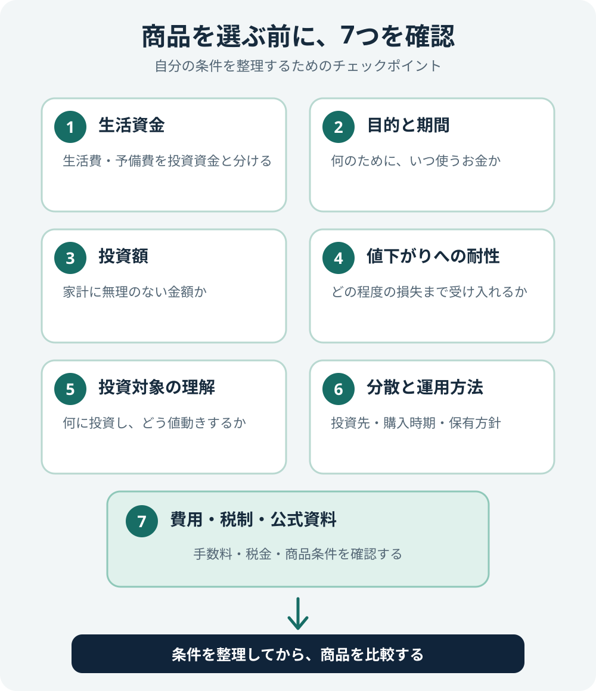
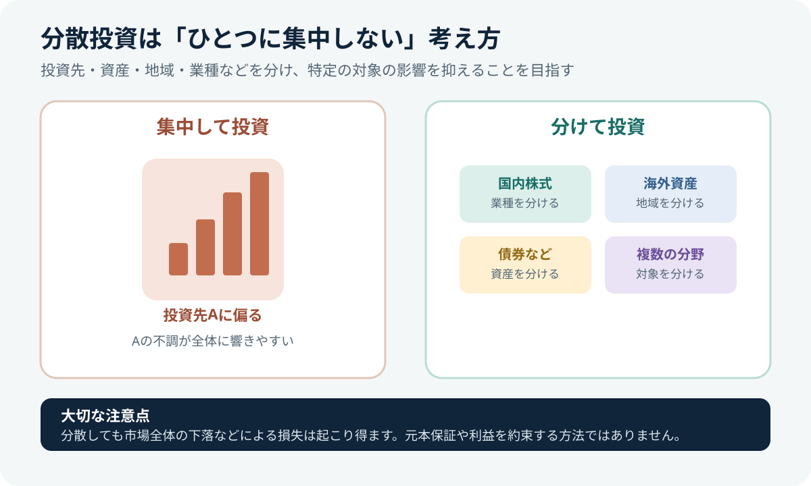

投資を始める前に確認したい7つのこと
投資を始めるときは、話題の商品や期待できる利益だけで判断せず、家計や目的を先に整理することが大切です。ここでは、金融商品を選ぶ前に確認したい基本を7つに分けて紹介します。

1. 近いうちに使うお金を分けておく
家賃や食費などの日々の支出、急な病気・失業・修理などに備えるお金、近い将来に使う予定のある資金は、値下がりする可能性のある投資資金と分けて考えましょう。株式や投資信託は、必要なタイミングで価格が下がっている可能性があります。
「投資に回せる金額」は、収入や支出、家族構成、今後の予定によって異なります。無理に投資額を増やす必要はありません。
2. 何のために、いつ使うお金なのかを決める
老後資金、教育費、住宅購入など、目的によって必要な時期や金額は違います。使う時期が近いお金と、長期間使う予定のないお金では、取れるリスクも変わります。
目的と時期を書き出すと、投資すべきか、預貯金などで準備するべきか、どの程度の値動きを受け入れられるかを整理しやすくなります。
3. 値下がりにどこまで耐えられるか考える
投資でいうリスクは、日常語の「危険」とは少し異なり、価格や運用結果の振れ幅を指す文脈で使われます。株式や投資信託の価格は上下し、投資元本を下回ることがあります。投資先の信用状況や為替変動なども価格に影響します。
リスクは「損失の可能性」だけでなく、値動きの振れ幅
下の帯は値動きの大きさをイメージした模式図です。実際の商品の数値や将来の成績を示すものではありません。
大切な点：リスクが高いことは、高いリターンの保証ではありません。投資対象や期間などの条件を確認し、自分が受け入れられる値動きか考えましょう。
一般に、大きなリターン（運用による利益や損失）を期待する投資では、大きな値動きや損失の可能性を引き受ける場合があります。ただし、リスクが高いこと自体が高いリターンを保証するわけではなく、損失が大きくなる可能性もあります。リターンの高さだけでなく、どの程度の値下がりに耐えられるかも合わせて考えましょう。
値下がりしたときに生活費が足りなくならないか、慌てて売却せずにいられるか、投資期間を確保できるかを具体的に考えましょう。値下がりへの耐性は、気持ちの面だけでなく家計の状況にも左右されます。
投資先を何にするか決めきれず、全世界株式・S&P 500・積立方法などをまとめて整理したい場合は、「投資は何を買えばいい？迷った人のためのシンプルな考え方」から全体像を確認できます。
4. 仕組みを理解できる商品から調べる
投資対象、利益や損失が生じる仕組み、手数料、換金方法、分配金や配当の扱いを説明できない商品は、急いで購入しないことが大切です。「人気がある」「知人に勧められた」「最近値上がりした」だけでは、自分に合う根拠にはなりません。
投資信託とETFの違いから知りたい場合は、投資信託とETFの違い・コスト・売買方法の比較も参考にしてください。
5. 分散・積立・長期は目的に合わせて使う

- 分散：投資先や資産、地域などを分け、特定の投資先に集中する影響を抑える考え方です。ただし、市場全体が下落する場合など、損失を防げるわけではありません。
- 積立：購入時期を分ける方法です。毎月など一定の間隔で買い付けるため、購入価格や購入数量が時期によって変わります。
- 長期：短期の値動きに反応した売買を減らし、決めた投資方針を継続するための考え方です。投資対象や資産配分、必要な時期に合わせて保有期間を考えましょう。
金融庁も資産形成の基本として、家計管理・ライフプランニングとあわせて、長期・積立・分散投資を紹介しています。自分の目的とリスク許容度に合うかを確認して活用しましょう。
6. 手数料と税金を確認する
金融商品では、購入時や売却時の手数料、保有中にかかる費用、売買価格の差などが運用結果に影響します。費用の種類や金額は商品・金融機関によって異なるため、目論見書や公式の手数料表を確認してください。
NISAは一定の投資から得られる利益が非課税となる制度ですが、元本保証の制度ではありません。対象商品や口座区分などの条件は、金融庁や利用する金融機関の公式情報で確認しましょう。
7. 公式情報を読んでから判断する
広告、SNS、口コミは調べ始めるきっかけにはなりますが、購入判断の根拠をそれだけに頼らないようにしましょう。商品の目論見書・運用報告書、運用会社や取引所の説明、金融庁などの公的情報を確認し、メリットだけでなくリスクや費用も読みます。
- 生活費や近い将来に使うお金を投資に回していないか
- 投資する目的と期間を説明できるか
- 元本割れの可能性を理解しているか
- 商品が何に投資し、どう値動きするか理解できるか
- 手数料・税金・換金条件を確認したか
- 公式資料を読み、他の商品とも比較したか
公式情報でさらに学ぶ
- 金融庁：資産形成の基本 — 家計管理、ライフプランニング、長期・積立・分散投資。
- J-FLEC：投資のはじめ方 — 長期投資、積立、分散、リスク許容度など。
- 日本取引所グループ：ETFのリスク — 価格変動、為替、基準価額と市場価格の乖離など。
まとめ
投資を始める前には、生活資金、目的、投資期間、値下がりへの耐性、商品内容、コスト、公式情報を確認しましょう。すべてを一度に理解する必要はありませんが、仕組みやリスクを理解できない商品は、無理に購入する必要はありません。